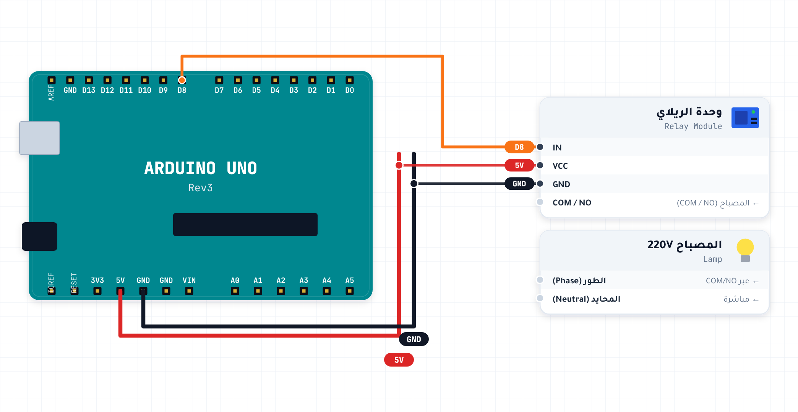
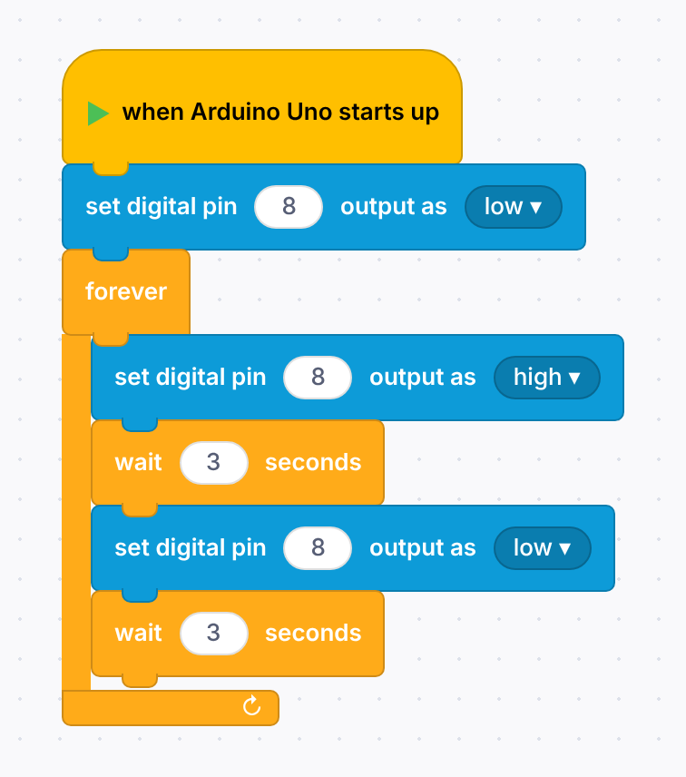

▶فيديو الشرح
الريلاي يسمح للأردوينو بتشغيل أجهزة 220V بأمان وعزل تام.
1المكونات
ARDUINO UNOboardوحدة الريلايRelay Moduleالمصباح 220VLampأسلاك توصيلJumper Wiresلوحة تجاربBreadboard
2مخطط التوصيل

اضغط على المخطط لتكبيره · نسخة SVG عالية الدقة
| القطعة | الطرف | يوصل إلى |
|---|---|---|
| وحدة الريلاي | IN | D8 |
| وحدة الريلاي | VCC | 5V |
| وحدة الريلاي | GND | GND |
| وحدة الريلاي | COM / NO | المصباح (COM / NO) |
| المصباح 220V | الطور (Phase) | عبر COM/NO |
| المصباح 220V | المحايد (Neutral) | مباشرة |
3الكود
لا يحتاج هذا المشروع إلى أي مكتبة إضافية.
/* المشروع 14: مفتاح التحكم بالمرحل (Relay Module) كتاب: 38 مشروع في شهر — لؤي النصري (@robotlouay) التوصيل: وحدة الريلاي: VCC → 5V GND → GND IN → Pin 8 جهة الحِمل: COM و NO في سلك الطور (Phase) للمصباح ⚠ خطر: جهد 220V قاتل. افصل الكهرباء قبل أي توصيل، ويُفضّل التجربة أولاً بحِمل منخفض الجهد (مصباح 12V أو مروحة 5V). من Serial Monitor: أرسل 1 للتشغيل و 0 للإطفاء. ملاحظة: بعض الوحدات تعمل بمنطق معكوس (Active LOW)، عندها اجعل ACTIVE_LOW = true. */ const int RELAY_PIN = 8; const bool ACTIVE_LOW = false; void relayOn() { digitalWrite(RELAY_PIN, ACTIVE_LOW ? LOW : HIGH); } void relayOff() { digitalWrite(RELAY_PIN, ACTIVE_LOW ? HIGH : LOW); } void setup() { Serial.begin(9600); pinMode(RELAY_PIN, OUTPUT); relayOff(); Serial.println("Send 1 = ON, 0 = OFF"); } void loop() { if (Serial.available()) { char c = Serial.read(); if (c == '1') { relayOn(); Serial.println("Lamp ON"); } if (c == '0') { relayOff(); Serial.println("Lamp OFF"); } } }
🧩 mBlock 5: اختر الجهاز Arduino Uno ثم وضع Upload، وأنشئ المتغيرات المستعملة من فئة Variables.
نسخة مبسطة بدون Serial: الريلاي يعمل 3 ثوانٍ ويتوقف 3 ثوانٍ بالتناوب.
نسخة مبسطة بدون Serial: الريلاي يعمل 3 ثوانٍ ويتوقف 3 ثوانٍ بالتناوب.


4كيف يعمل؟
- الأردوينو يرسل HIGH إلى IN
- الملف الداخلي يجذب المفتاح فيغلق COM-NO
- المصباح يشتغل
- LOW يفتح الدائرة
⚠ قبل توصيل الكهرباء: راجع كل سلك مع الجدول أعلاه، وتأكد من عدم وجود تماس بين 5V و GND. اختر اللوحة والمنفذ الصحيحين من قائمة Tools في Arduino IDE.